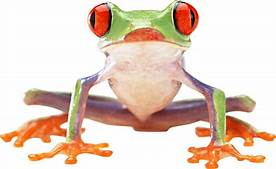

Infopage of Frogs
After you are done reading you can particiate in a little quiz and play a quick game of frogger:
After you are done reading you can particiate in a little quiz and play a quick game of frogger:
Frogs are amphibians, which comes from the Greek language and means "both lives." Most frogs are born in water as tadpoles and gradually change into frogs although some frogs, known as direct developers, are born as full frogs. This allows them to be born and live far away from water, such as on mountaintops.
A frog mainly lives on insects and small animals like earthworms, minnows and spiders.
There are approximately 4,740 species of frogs around the entire world. There are about 90 species of frogs in the United States. Unfortunately, about 120 amphibian species, including frogs, toads and salamanders, have disappeared since 1980. Historically, one species of amphibian would disappear every 250 years.
Frogs can be found on every continent in the world except Antarctica. However, the highest concentration of frogs is found in warmer tropical climates.
Frogs are known as indicator species and can give scientists valuable insight into how an ecosystem is functioning. Because they are predators and prey many animals are affected by them, frogs provide insight into the health of the ecosystem.
Did you know that? :
 This is a disclaimer, you can check out the orignial source here Defenders of Wildlife.
1. What class of vertebrates are frogs?
Answer: --------
2. Are frogs carnivorous animals?
Answer: --------
3. True or False, there are less than 4740 species of frogs?
Answer: --------
4. Can frogs be found in the north pole?
Answer: --------
5. Frogs are known to scientists as ____________ species.
Answer: --------
6. Frogs drink water through their skin because it is ____________.
Answer: --------